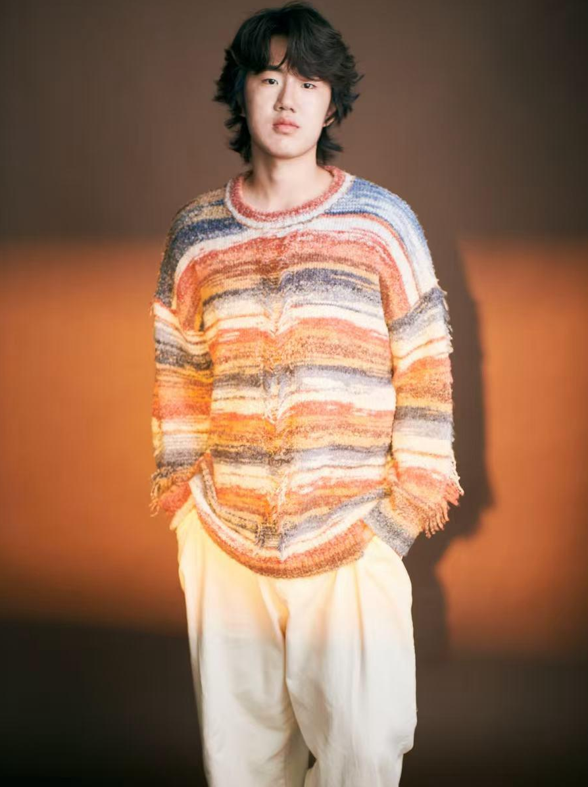

 LinkedIn
LinkedIn
David Liang
A student at Washington University in St. Louis, studying Computer Science, Human Centered Interaction and Design. I'm passionate about game development because it lets me be creative and turn ideas into reality. Most of my current work is in Unity, but I'm getting into Unreal for my newest project to keep exploring new ways of building experiences.
I truly care about making a game feel polished and complete to the smallest details. Whether it's the sound effects of clicking a button or dialogs that tell a story, I think every element in a game should feel natural and intentional to the player. I enjoy working with teams and greatly value feedback from others, since that's often where I learn the most and see what needs to be improved from another perspective.
Outside of game development, I love exploring other creative outlets — things like cooking, sketching, or working on cars. I also have a passion for interior design, a field I once considered pursuing.
Featured Games